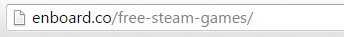

How I've created Enboard — a case study
If you want to know how to create application such as Enboard or you're interested in my workflow then you should read this.
History and Idea
After I've started my web design adventure I have amassed a big number of related bookmarks with articles, fonts, services, etc. Organizing everything and accessing it with browser default bookmarks manager was getting really tiring so I've looked into some bookmark managing services like Delicious etc. but unfortunately nothing cut it for me.
That's when I've got an idea to create a simple static page where I could keep all my bookmarks organized through categories in a way I liked to. I've named it DopeLists.com and at the beginning it was only about web design. Later on I've added other sections like front-end, after format and general.
I've later changed its name to Beaqn.in and also redesigned and refactored it a bit because of bad markup decisions and tiresome way of adding new links.
The website got a bit popular, shared many times and received good amount of e-mails with positive feedback and suggestions. Among the user feedback there were many questions if Beaqn source code could be used for their own lists. That's how I've got an idea to create web app where people could do exactly that but without messing in code.
Design
Boards layout and UX
I wanted to keep things simple and clean so that's why board is reduced to only essentials - items (with optional hover descriptions) organized through categories. That results in a glanceable and optimally packed content that can be quickly explored and accessed by users.
Board owners can quickly edit categories and items placement thanks to drag and drop interface. Content addition is also quick and easy, link items have auto-filled titles and descriptions scraped from websites open graph tags with fallback to standard site title and meta description tags.
Suggestions
Everyone can make suggestions to public boards. Boards owners are notified when suggestion is sent and then can review (suggestions are automatically marked for read and unread) and delete them.
Changelog
When board owners add, modify or delete items it gets logged in the changelog that can be seen by anyone that can access board. Different types of log events have different icons and are color coded for quicker scanning through a lot of log items.
URL Design
Boards are using top level directory after domain name because I wanted them to be memorable and easily accessible. Every new board has automatically generated unique 6 character long alphanumeric string. When board is created the owner can add another alias for board using custom slug which is not taken by another board and not used by other Enboard views. That way board creation is faster and people who don't need specific board aliases (e.g. in private boards) aren't forced to take names that could be used by other users.
Settings
Every board settings page is splitted with 4 tabs in a way that lets users to quickly change the thing they are after:
- Basic: basic board information - title, optional description, board url and theme.
- Image: here users can upload, change or delete board image.
- Visibility: board visibility options with descriptions.
- Delete: board deletion feature requiring user to type his password so they don't delete it by accident and for further security.
Technology & Development
Server Set-Up
All the application code, static files and PostgreSQL databases are hosted on a Ubuntu 14.04 Linode VPS.
For web server I've chosen Nginx because it was easier to configure and from my research it was better suited for Django applications and overall more faster than Apache. It serves two purposes — first is a proxy to a Gunicorn which executes Enboard application and second is a server for static files.
Upstart is automatically stopping or starting Enboard application on system events like boot-ups or crashes.
In addition I'm using CloudFlare, which is basically a plug-and-play location sensitive CDN, cache, security protection and some other things. It also lets visitor know when the website is down.
Deployment
I was working on Enboard all by myself and I wanted to have fast deployment flow since I knew I'll reiterate and update Enboard couple times a week so I didn't used any deployment tools. Instead I've opted for a simple GIT deployment, where I push local changes to BitBucket repository and pull them from Linode server.
My usual deployment flow looked like this:
- Update code and merge GIT branches.
- Change static files versions using GET
?v=parameter at the end of links to files so that end users will get fresh styles and scripts. git pushfrom local development set-up.git pullinside server.- Database migration — if necessary.
- Static files collect.
- CloudFlare cache clear.
- Application restart.
Front-End Structure & Builds
My CSS preprocessor of choice is Sass. It let me to easily create custom color themes (with the help of mixins) and to have modular CSS structure based on BEM methodology. Along with Sass, I've used Autoprefixer postprocessor — that way I didn't have to worry about manually adding browser vendor prefixes like -webkit- or -ms-.
JavaScript isn't something special, I have used
Color Themes
Every board can be customized with 25 themes. Themes only change board headers, items icons and items description background.
They are implemented with the help of Sass mixin and icon fonts features. This lets me to quckly add new themes and easily change whole board theme using only one class in <html> that overwrites colors of specified elements.
Counting number of shares
To miminize page load speeds, especially on smartphones I've decided to not use any external sharing widgets since they are really big performance hogs. Instead I've created custom sharing buttons that open sharing dialog in new popup window. Share count is displayed in a board header as a cumulative number updated every 6 hours from selected social networks, e.g. I don't count reddit upvotes as shares. That way I don't need to use any bloated iframes and limit network requests to minimum.
Performance Optimizations
From the beginning I've wanted to make Enboard very fast. I've implemented couple of techniques that improved normal and perceived load times.
All relevant file extensions are cached and gzip compressed using Nginx and HTML pages are minified using Django bult-in filters.
Stylesheets and scripts are concatenated and minified using Gulp build into 3 files to reduce network requests — global stylesheet, dependency scripts and scripts controlling the application.
Reducing Initial Server Response
Bigger boards had a very long server response times because they contained a lot of items with many database relationships. I've solved that issue by loading items using AJAX after initial page load.
To take things a step further I've also deferred other components like board creator data and changelog.
Lazdy Font Loading
To fight something called FOIT (flash of invisible text) I've plugged in a neat script called Font Observer that — as the name suggests — is observing font load requests and returns callbacks that make possible to apply custom font (in this case Roboto) only after it's loaded. Really useful, especially on smartphones where font loads aren't that snappy like on desktops.
While we are speaking about fonts, we may also speak about icon fonts. I've used entypo+ icons packaged as a font. This resulted in a only one ~13kb request for icons. This approach also made every icon crisp on high-density displays because they are vector based and let me easily customize their color on custom board themes.
Reducing Network Requests
I've also tried to minimize 3rd party resources requests to minimum. That's why I don't use any social network widgets for share buttons. I've gone with more lightweight solution. My share buttons are just links to "sharer" urls that opens pop-up window with share dialog.
https://twitter.com/share?url=http://enboard.co/frontend/&text=Front%20End%20Resources&via=enboardcoFor displaying shares number I'm using custom Python script that counts shares using social networks APIs every 6 hours and updates database when that number has increased.
Analytics & User Feedback
For tracking traffic and other stats I'm just using the ol' plain Google Analytics.
For tracking user bahavior and gathering feedback I'm using HotJar. It's a really useful tool that I could describe as a "swiss knife" of analytics.
On Enboard I've used click heatmaps and user recordings to detect and solve usabilty issues and polls and surveys to gather feedback.
Credits
Enboard couldn't be made single-handedly in such a short span amount of time without websites, articles, libraries, tools and services listed below.
Websites & Articles
- Deploying Django 1.7 on Ubuntu with DigitalOcean by Adam Beagle
- Font Loading Revisited with Font Events by filament group
- HTML5 Doctor